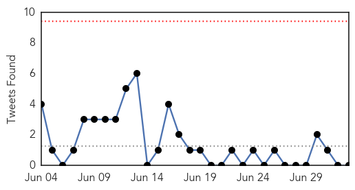

30 Day Trends
Web: 10 alerts, 6 warnings
Twitter: 0 alerts, 0 warnings
Top Articles:
- 0.996
- Hospital releases Omani man after full recovery from MERS
- 0.995
- Thailand hospital discharges first and only Mers case after he's declared free of virus, SE Asia News & Top Stories
- 0.995
- Ministry reports new MERS case-INSIDE Korea JoongAng Daily
- 0.994
- Thailand's first MERS case to leave hospital, news, Health News, AsiaOne YourHealth
- 0.994
- Thailand's first MERS case to leave hospital
- 0.993
- Thailand's first MERS case to leave hospital
- 0.992
- Thailand's first MERS case to leave hospital
- 0.991
- Thailand's only disease case set to leave hospital
- 0.990
- Omani to fly home after declared free of MERS virus
- 0.989
- Nurse infected with MERS virus in South Korea
- 0.989
- Nurse infected with MERS virus in South Korea
- 0.988
- Thailand's First MERS Case To Leave Hospital
- 0.984
- MERS patients at Samsung Medical moved
- 0.975
- Winter diarrhoea in children
- 0.966
- Lacey motel linked to outbreak of Legionnaires’ disease agrees to close temporarily
- 0.961
- (MERS virus) Health chief casts wary eye at Korea infections
- 0.957
- Washington motel closes after possible Legionnaires' report
- 0.955
- South Korea to waive visa application fee for RI travelers
- 0.948
- Kid dies of AES, five more in hospital
- 0.938
- Hong Kong considers extending health watch on South Korea as new Mers infections confirmed
- 0.924
- Juneau Empire - Alaska's Capital City Online Newspaper
- 0.917
- Chicago Tribune
- 0.917
- Chicago Tribune
- 0.917
- Chicago Tribune
- 0.917
- Chicago Tribune
- 0.917
- Chicago Tribune
- 0.917
- Chicago Tribune
- 0.910
- The world windows to Thailand
- 0.870
- Tick testing increases
- 0.839
- Thailand's first MERS patient cured
- 0.821
- Thailand's first MERS patient cured - Xinhua
- 0.804
- California Woman Catches Fatal Brain Eating Bug After Swim
- 0.801
- Call in for MERS inquiries-INSIDE Korea JoongAng Daily
- 0.770
- Lyme Disease always a summer threat
- 0.728
- Bad belly: food poisoning or tummy bug?
- 0.702
- AIDS: Is there an epidemic in Russia?
- 0.698
- Cuba Eliminates Transmission of HIV and Syphilis from Mother to Child, WHO Says Growing Your Baby
- 0.672
- Dead bat found at Cedar Heights Junior High
- 0.661
- More specialist doctors needed
- 0.661
- An Unwelcome Gift from Gorillas – Pamela K. Bond
- 0.629
- Blacklegged ticks examined as Canada experiences increase in Lyme disease cases
- 0.576
- Cuba first to stop mother-to-child transmission of HIV
- 0.570
- Chronic Wasting Disease Detected in Texas Captive Deer
- 0.570
- Chronic Wasting Disease Detected in Medina County Captive Deer
- 0.564
- S Korea to inject $10bn into economy after Mers outbreak
- 0.559
- Africa needs a health policy to help people with albinism
- 0.554
- Hospitals treating burn ...｜Society｜WCT
- 0.548
- J P Nadda Urges States To Focus On Innovations To Achieve Superior Health Outcomes
- 0.521
- UN MINISTRE LUXEMBOURGEOIS EN VISITE AU CESE POUR LE LANCEMENT DE LA PRÉSIDENCE DE SON PAYS
- 0.514
- Burst water main: Repairs under way but service still disrupted
Showing top 50 articles...
Top Tweets:
-
No tweets found for Jul 03, 2015
Web/News Articles

Tweets
Article Locations

Article Confidences